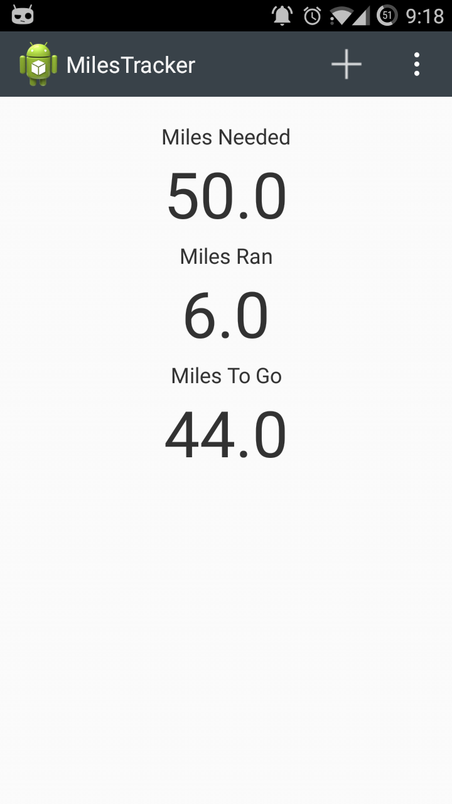
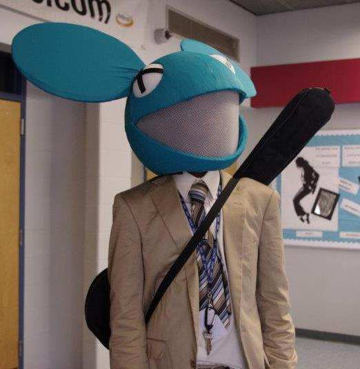
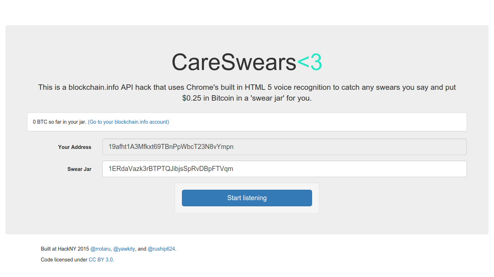

About
I'm Sehmon Burnam, and I am currently a student at Union County Magnet High School in Scotch Plains NJ. I enjoy programming, playing soccer, and playing music. I love building things, and in college I plan on majoring in Computer Science.
Education
Union County Magnet High School is a public Magnet High School located in Scotch Plains, NJ. With a curriculm based in Engineering and technology, UCMHS hosts the top students in Union County, and gives them an extensive engineering education based in Math, Science, and Project-Based learning.
Favorite Classes |
|
| AP Physics C: Mechanics | 2013 |
| AP Calculus AB | 2013 |
| Introdution to Programming | 2013 |
| AP Calculus BC | 2014 |
| AP Physics C: Electricity & Magnetism | 2014 |
Experience
UCVTS STA Internship: 2014-2015
The UCVTS STA Internship is a selective program at UCVTS meant to teach students about how large-scale technology departments are managed, organized, and maintained. A combination of technology grades from Freshmen through Junior years, teacher recommendations, attendance and an interview process, help determine the new Student Technology Assistants. During the school year students will spend a portion of their day working as interns for the technology department.
Programming Experience
Languages Proficient In:
- Java
- Python
- Android
- HTML & CSS
- Processing
Technologies Proficient in:
- Linux
- Git
- Vim
- Computer Aided Drafting (CAD)
Projects

What Am I Eating?
What am I eating was the first android app i created at a hackathon. "What Am I Eating?" helps you to understand what food labels actually mean. Using the FoodEssentials API provided by Mashery, "What Am I Eating?" allows you to scan a barcode, then instantly have access to data about the product such as Additives and Nutrition Facts. If you aren't sure what a specific ingredient is, you can simply tap on the item to bring up more information about it. This app was made at HackRU, a 24 hour programming meetup hosted at Rutgers University.
*HackRU Top 10 project
*HackRU Best Use of A Mashery API.
See what they wrote about me here

MileTracker
MileTracker was the first android App I've ever made. For my high school Fitness class, we are required to track all physical activity and log it into a "MileSheet". I kept losing my MileSheet, so created an app to keep all my Miles on my phone.

Deadmau5
During Halloween of 2011, I decided to create a model of the mouse head that the electronic artist Deadmau5 wears at his concerts. This required creating the model of the head from Paper-Mache, convering the head with fabric and modeling the ears, then creating an Arduino circuit to control the lights going to the eyes. Most of Deadmau5's songs are at 120 BPM, so the Arduino was programmed to change the color of the lights to match.

CareSwears
Using the Chrome WebKit Voice Recognition API, CareSwears listens for swears while the application is open. Each time our application recognizes a swear word, it uses the BlockChains API to send a Bitcoin transaction to a specified "Swear Jar" address. This address can be of a charity, a friend's wallet, the possibilities are endless.
Contact/Links
- Resume: www.hackuc.com/website/SehmonBurnamResume.pdf
- Github: www.github.com/yawkity
- LinkedIn: www.linkedin.com/in/sehmonb
- Email: sehmon3@gmail.com
- Twitter: http://www.twitter.com/sehmonb
- Github: www.github.com/yawkity
- Medium: http://www.medium.com/@sehmonb